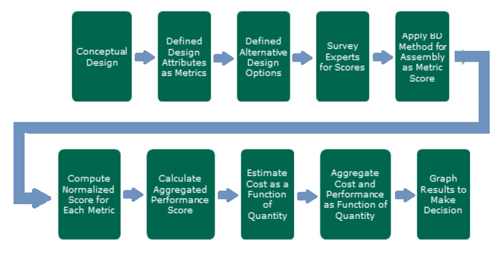
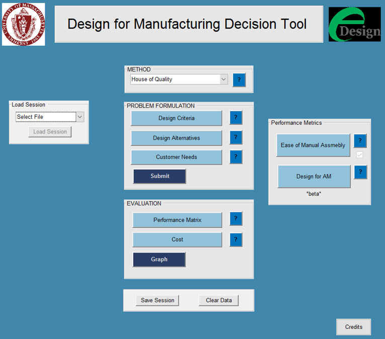

Overview
Development of a decision support tool to help engineers evaluate whether additive manufacturing is appropriate for their design and identify optimization opportunities.
Problem Statement
Engineers often lack systematic guidance for evaluating additive manufacturing suitability early in design. Challenge: create a tool that captures domain expertise and guides decision-making.

Solution & Approach
Developed an interactive decision tree tool incorporating domain expertise from manufacturing specialists. The tool evaluates geometry, materials, performance requirements, and cost.

Results & Outcomes
Successfully created a tool that designers use to systematically evaluate AM suitability and identify design optimizations.

Key Learnings
Capturing complex domain expertise in an accessible tool requires deep collaboration between engineers and tool developers. User testing revealed important gaps in initial assumptions.